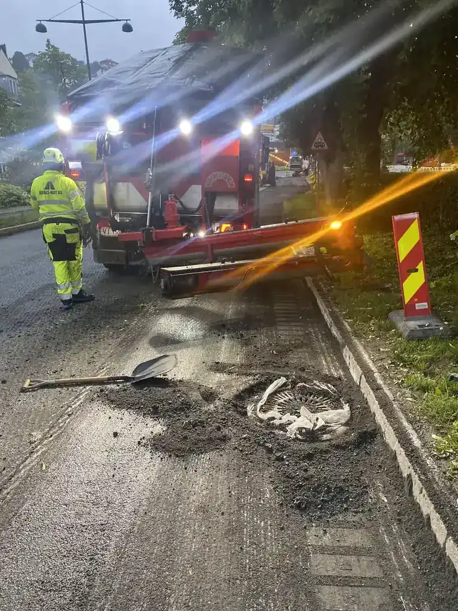

Forside/Miljø
Miljø og HVO100
All asfaltproduksjon foregår med HVO100 – fornybar diesel som reduserer CO₂-utslippene betydelig.
Produksjon
HVO100 i all produksjon
All asfaltproduksjon foregår med HVO100. Det reduserer CO₂-utslippene med opptil 90 prosent sammenlignet med fossil diesel.
Leverandører oppgir typisk inntil ca. 90 prosent reduksjon over livsløpet.
- HVO100 i all produksjon.
- Opptil 90 % mindre CO₂.
- Fornybar diesel.
| Fossil anleggsdiesel | Ca. 2,66 kg CO₂ per liter ved forbrenning. |
|---|---|
| HVO100 | Regnes ofte som 0 kg fossil CO₂ i norske klimaregnskap, fordi karbonet er biogent. |
| Reduksjon | Leverandører oppgir typisk inntil ca. 90 % over livsløp. |

Vil dere vite mer om miljøregnskapet?
Ta kontakt, så går vi gjennom det.